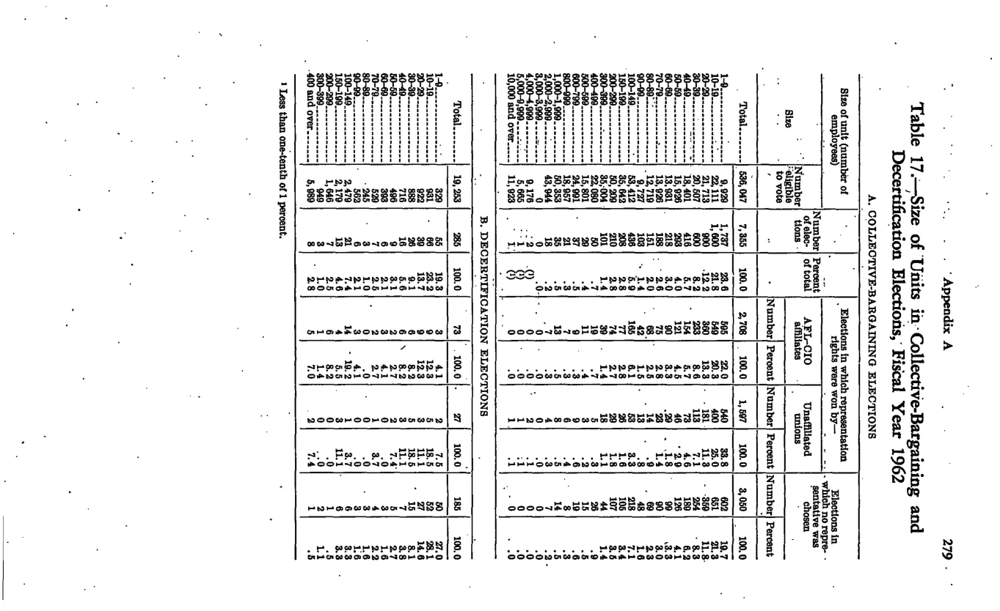

NLRB Stats Archive › Annual Reports › FY1962 › Decertification (RD) elections
| Size of unit (employees eligible to vote) | Total elections — Number | Total elections — Percent | Total employees eligible — Number | Total employees eligible — Percent | AFL-CIO retained — Number | AFL-CIO retained — Percent | Unaffiliated retained — Number | Unaffiliated retained — Percent | No representative — Number | No representative — Percent |
|---|---|---|---|---|---|---|---|---|---|---|
| Total | 285 | 100 | 19,253 | 100 | 73 | 100 | 27 | 100 | 185 | 100 |
| [Size-strata sub-rows below — 1-9, 10-19, 20-29, 30-39, 40-49, 50-59, 60-69, 70-79, 80-89, 90-99, 100-149, 150-199, 200-299, 300-399, 400-and-over employees — captured at top-level only due to rotated landscape page density] |

Source data: U.S. NLRB Annual Reports (public domain). Reconstruction by NLRB Stats Archive. Verify figures against the source scan. Updated June 2026.